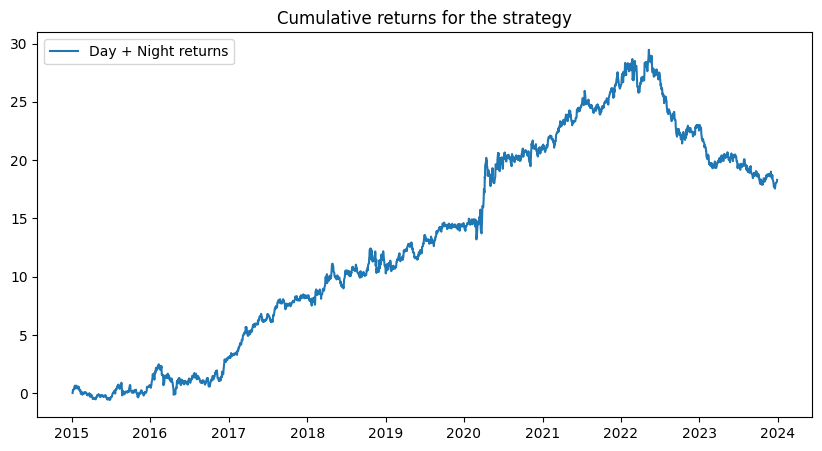
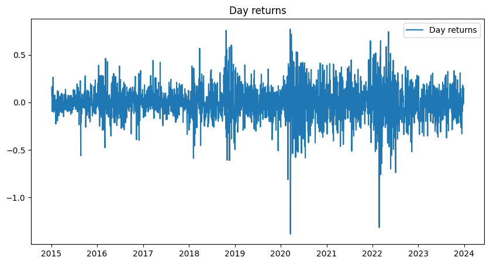
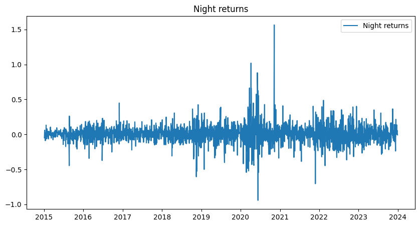

Asset Pricing: A Tale of Night and Day
May 4, 2025Table of Contents
Strategy Details
Strategy Overview
This strategy builds upon the classic "bet against beta" approach by incorporating an innovative dimension: the distinction between night and day returns. The paper demonstrates that the traditional beta anomaly is primarily driven by overnight returns, while daytime returns show a positive relation with beta. This insight leads to a more sophisticated trading strategy that can potentially generate superior risk-adjusted returns.
Implementation Differences from Original Paper
While we aim to replicate the core methodology of the original paper, there are several key differences in our implementation:
- Data Source: Using Yahoo Finance (yfinance) instead of CRSP data for stock returns
- Market Scope: Focusing on US equity market only, compared to the paper's analysis of 39 countries
- Time Period: Analysis from 2014-2023, versus the paper's 1992-2016 period
Data Collection and Processing
Our implementation begins with setting up the data collection environment and processing stock returns. Here's how we approach it:
import os
import requests
import pandas as pd
import numpy as np
import matplotlib.pyplot as plt
import yfinance as yf
import statsmodels.api as sm
# Define analysis period
start_date = '2014-01-01'
end_date = '2023-12-31'
# Fetch S&P 500 constituents from Wikipedia
url = 'https://en.wikipedia.org/wiki/List_of_S%26P_500_companies'
response = requests.get(url)
html = response.content
df = pd.read_html(html, header=0)[0]
# Prepare ticker list including S&P 500 index
tickers = df['Symbol'].tolist()
tickers.append('^GSPC') # Add S&P 500 index
def load_data(symbol):
"""
Load and cache historical stock data for a given symbol.
Returns None if data is invalid or unavailable.
"""
direc = 'data/'
os.makedirs(direc, exist_ok=True)
file_name = os.path.join(direc, symbol + '.csv')
if not os.path.exists(file_name):
ticker = yf.Ticker(symbol)
df = ticker.history(start=start_date, end=end_date)
df.to_csv(file_name)
df = pd.read_csv(file_name, index_col=0)
df.index = pd.to_datetime(df.index, utc=True).tz_convert('US/Eastern')
df['date'] = df.index
if len(df) == 0:
os.remove(file_name)
return None
return df
# Load data for all tickers
holder = []
ticker_with_data = []
for symbol in tickers:
df = load_data(symbol)
if df is not None:
holder.append(df)
ticker_with_data.append(symbol)
tickers = ticker_with_data[:]
print(f'Successfully loaded data for {len(tickers)} companies')Data Collection Implementation
The data collection process is implemented with efficiency and reliability in mind:
- Environment Setup:
- Essential Python libraries for financial analysis
- Modern data processing tools (pandas, numpy)
- Financial data access (yfinance)
- Data Management:
- Local caching system to minimize API calls
- Automatic timezone handling for consistency
- Robust error handling for missing data
# Calculate different types of returns
for stocks in holder:
# Day returns (Open-to-Close)
stocks['Open_to_Close'] = (stocks['Close'] - stocks['Open']) / stocks['Open']
# Total returns (Close-to-Close)
stocks['Close_to_Close'] = stocks['Close'].pct_change()
# Night returns (derived from day and total returns)
stocks['Night_returns'] = (1 + stocks['Close_to_Close']) / (1 + stocks['Open_to_Close']) - 1Beta Calculation
We calculate the beta for each stock using night returns, which is a key component of our strategy. The beta calculation is performed using a rolling window approach to capture the dynamic nature of market sensitivity.
def calculate_beta(stock_returns, market_returns):
model = sm.OLS(stock_returns, sm.add_constant(market_returns))
results = model.fit()
beta = results.params.values[1]
return beta
def add_beta(ticker_data, market_data):
period = 252
beta_holder = {}
merged_df = pd.merge(
ticker_data['Night_returns'],
market_data['Night_returns'],
how = 'left',
left_index=True, right_index=True,
suffixes=('_stock', '_market')
)
merged_df.dropna(inplace=True)
for i, date in enumerate(merged_df.index):
if i < period:
continue
#for the day i-period to i-1 , we calculate the beta based on the past 252 days
stock_returns = merged_df.iloc[i-period:i]['Night_returns_stock']
market_returns = merged_df.iloc[i-period:i]['Night_returns_market']
beta = calculate_beta(stock_returns, market_returns)
beta_holder[date] = beta
beta_holder = pd.Series(beta_holder)
beta_holder.name = 'Beta'
beta_holder.index = pd.to_datetime(beta_holder.index, utc=True)
beta_holder.index = beta_holder.index.tz_convert('US/Eastern')
# Merge the beta with the original data
ticker_data = pd.merge(ticker_data, beta_holder, how='left', left_index=True, right_index=True)
return ticker_data
tickers_data = holder[0:-1]
market_data = holder[-1]
for ticker_index in range(len(tickers_data)):
tickers_data[ticker_index] = add_beta(tickers_data[ticker_index] , market_data)
print (tickers[ticker_index], "is about to be processed.")Beta Calculation Implementation
This code section implements the beta calculation methodology:
- Beta Calculation Function:
- Uses Ordinary Least Squares (OLS) regression
- Calculates beta as the slope coefficient
- Includes constant term for proper regression specification
- Rolling Window Implementation:
- Uses 252-day (trading year) window for beta estimation
- Merges stock and market night returns for analysis
- Handles missing data appropriately
Trading Strategy Implementation
In this section, we implement a trading strategy based on the paper's findings about the relationship between beta and returns during different market sessions. The strategy involves:
- Long low-beta stocks by shorting high-beta stocks when markets open (Day returns)
- Long high-beta stocks by shorting low-beta stocks when markets close (Night returns)
period = 252
beta_df = pd.DataFrame()
for i in range(len(tickers_data)):
beta_df = pd.concat([beta_df, tickers_data[i]['Beta']], axis=1)
beta_df.columns = tickers[:-1]
beta_df = beta_df[period+1:]
Night_returns_df = pd.DataFrame()
for i in range(len(tickers_data)):
Night_returns_df = pd.concat([Night_returns_df, tickers_data[i]['Night_returns']], axis=1)
Night_returns_df.columns = tickers[:-1]
Night_returns_df = Night_returns_df[period+1:]
Day_returns_df = pd.DataFrame()
for i in range(len(tickers_data)):
Day_returns_df = pd.concat([Day_returns_df, tickers_data[i]['Open_to_Close']], axis=1)
Day_returns_df.columns = tickers[:-1]
Day_returns_df = Day_returns_df[period+1:]
def get_extreme_beta_stocks(beta_df , i):
row = beta_df.iloc[i]
#select stocks only if they have positive betas top 10 and bottom 10
top_10 = row[row>0].sort_values(ascending=False).head(10)
bottom_10 = row[row>0].sort_values(ascending=True).head(10)
top_10_stocks = top_10.index.tolist()
bottom_10_stocks = bottom_10.index.tolist()
return top_10_stocks, bottom_10_stocks
def get_daily_return(beta_df):
Day_returns_holder = []
Night_returns_holder = []
monthflag = 0
for i in range(len(beta_df)):
#Checking if this is the new month, if yes, extract the top 10 and bottom 10 stocks again
if beta_df.index[i].month != monthflag:
daily_top10, daily_bottom10 = get_extreme_beta_stocks(beta_df , i)
monthflag = beta_df.index[i].month
daily_average_beta = beta_df.loc[beta_df.index[i], daily_top10 + daily_bottom10].mean()
high_beta_amount = (beta_df.loc[beta_df.index[i], daily_top10] - daily_average_beta)/daily_average_beta
low_beta_amount = (beta_df.loc[beta_df.index[i], daily_bottom10] - daily_average_beta)/daily_average_beta
#Day returns
high_beta_day_returns = (Day_returns_df.loc[Day_returns_df.index[i], daily_top10]* -high_beta_amount).sum()
low_beta_day_returns = (Day_returns_df.loc[Day_returns_df.index[i], daily_bottom10]* -low_beta_amount).sum()
Day_returns_holder.append(high_beta_day_returns + low_beta_day_returns)
#Night returns
high_beta_night_returns = (Night_returns_df.loc[Night_returns_df.index[i], daily_top10] * high_beta_amount).sum()
low_beta_night_returns = (Night_returns_df.loc[Night_returns_df.index[i], daily_bottom10] * low_beta_amount).sum()
Night_returns_holder.append(high_beta_night_returns + low_beta_night_returns)
return Day_returns_holder, Night_returns_holder
Day_returns_holder, Night_returns_holder = get_daily_return(beta_df)Code Explanation
This code section implements the core trading strategy:
- Data Preparation:
- Creates separate DataFrames for beta, night returns, and day returns
- Uses a 252-day period for beta calculation
- Aligns all time series for consistent analysis
- Portfolio Construction:
- Selects top and bottom 10 stocks based on beta values
- Calculates position sizes based on beta deviations from mean
- Rebalances positions monthly to maintain strategy consistency
Results Analysis
Let's analyze the performance of our day and night trading strategy:
Returns_df = pd.DataFrame(Day_returns_holder)
Returns_df.index = beta_df.index
Returns_df.columns = ['Day_returns']
Returns_df['Night_returns'] = Night_returns_holder
Returns_df['Total_returns'] = Returns_df['Day_returns'] + Returns_df['Night_returns']
#The returns are not based on the initial investment amount
Returns_df['Cumulative_returns'] = Returns_df['Total_returns'].cumsum()
#Sharpe
Day_Sharpe = (Returns_df['Day_returns'].mean()*(252**0.5)) / Returns_df['Day_returns'].std()
Night_Sharpe = (Returns_df['Night_returns'].mean()*(252**0.5)) / Returns_df['Night_returns'].std()
Total_Sharpe = (Returns_df['Total_returns'].mean()*(252**0.5)) / Returns_df['Total_returns'].std()
print(f"Day Sharpe: {Day_Sharpe}")
print(f"Night Sharpe: {Night_Sharpe}")
print(f"Total Sharpe: {Total_Sharpe}")
Day Sharpe: 0.03793448554306334
Night Sharpe: 0.9338312006946446
Total Sharpe: 0.5691650458099002
plt.figure(figsize=(10, 5))
plt.plot(Returns_df['Cumulative_returns'], label='Day + Night returns')
plt.title(f'Cumulative returns for the strategy')
plt.legend()
plt.show()
plt.close()
#plot the returns
plt.figure(figsize=(10, 5))
plt.plot(Returns_df['Day_returns'], label='Day returns')
plt.title(f'Day returns')
plt.legend()
plt.show()
plt.close()
#plot the returns
plt.figure(figsize=(10, 5))
plt.plot(Returns_df['Night_returns'], label='Night returns')
plt.title(f'Night returns')
plt.legend()
plt.show()
plt.close()

Performance Analysis
The results reveal several key insights:
- Return Components:
- Day returns show minimal Sharpe ratio (0.038)
- Night returns demonstrate strong performance (Sharpe ratio of 0.934)
- Combined strategy achieves moderate Sharpe ratio (0.569)
- Strategy Characteristics:
- Night trading dominates overall performance
- Day trading shows minimal impact on returns
- Combined strategy benefits from diversification
Trading Strategy Overview
This strategy implements a sophisticated approach to beta-based trading by distinguishing between day and night returns. The key components are:
Strategy Components
- Day Trading Strategy:
- Long low-beta stocks
- Short high-beta stocks
- Executed during market open hours
- Night Trading Strategy:
- Long high-beta stocks
- Short low-beta stocks
- Executed during market close hours
def get_extreme_beta_stocks(beta_df , i):
row = beta_df.iloc[i]
#select stocks only if they have positive betas top 10 and bottom 10
top_10 = row[row>0].sort_values(ascending=False).head(10)
bottom_10 = row[row>0].sort_values(ascending=True).head(10)
top_10_stocks = top_10.index.tolist()
bottom_10_stocks = bottom_10.index.tolist()
return top_10_stocks, bottom_10_stocks
def get_daily_return(beta_df):
Day_returns_holder = []
Night_returns_holder = []
monthflag = 0
for i in range(len(beta_df)):
#Checking if this is the new month, if yes, extract the top 10 and bottom 10 stocks again
if beta_df.index[i].month != monthflag:
daily_top10, daily_bottom10 = get_extreme_beta_stocks(beta_df , i)
monthflag = beta_df.index[i].month
daily_high_average_beta = beta_df.loc[beta_df.index[i], daily_top10].mean()
daily_low_average_beta = beta_df.loc[beta_df.index[i], daily_bottom10].mean()
high_beta_amount = (beta_df.loc[beta_df.index[i], daily_top10] )/daily_high_average_beta
low_beta_amount = -(beta_df.loc[beta_df.index[i], daily_bottom10] )/daily_low_average_beta
#Day returns
high_beta_day_returns = (Day_returns_df.loc[Day_returns_df.index[i], daily_top10]* -high_beta_amount).sum()
low_beta_day_returns = (Day_returns_df.loc[Day_returns_df.index[i], daily_bottom10]* -low_beta_amount).sum()
Day_returns_holder.append(high_beta_day_returns + low_beta_day_returns)
#Night returns
high_beta_night_returns = (Night_returns_df.loc[Night_returns_df.index[i], daily_top10] * high_beta_amount).sum()
low_beta_night_returns = (Night_returns_df.loc[Night_returns_df.index[i], daily_bottom10] * low_beta_amount).sum()
Night_returns_holder.append(high_beta_night_returns + low_beta_night_returns)
return Day_returns_holder, Night_returns_holder
Day_returns_holder, Night_returns_holder = get_daily_return(beta_df)
Returns_df = pd.DataFrame(Day_returns_holder)
Returns_df.index = beta_df.index
Returns_df.columns = ['Day_returns']
Returns_df['Night_returns'] = Night_returns_holder
Returns_df['Total_returns'] = Returns_df['Day_returns'] + Returns_df['Night_returns']
#The returns are not based on the initial investment amount
Returns_df['Cumulative_returns'] = Returns_df['Total_returns'].cumsum()
#Sharpe
Day_Sharpe = (Returns_df['Day_returns'].mean()*(252**0.5)) / Returns_df['Day_returns'].std()
Night_Sharpe = (Returns_df['Night_returns'].mean()*(252**0.5)) / Returns_df['Night_returns'].std()
Total_Sharpe = (Returns_df['Total_returns'].mean()*(252**0.5)) / Returns_df['Total_returns'].std()
print(f"Day Sharpe: {Day_Sharpe}")
print(f"Night Sharpe: {Night_Sharpe}")
print(f"Total Sharpe: {Total_Sharpe}")Code Explanation
This code section implements the core trading strategy:
- Portfolio Selection:
- Identifies top and bottom 10 stocks by beta
- Filters for positive beta stocks only
- Rebalances portfolio monthly
- Position Sizing:
- Calculates average beta for high and low beta portfolios
- Scales positions inversely to portfolio beta
- Implements long-short strategy for both day and night
Based on the analysis, the strategy demonstrates that focusing on night trading would yield superior risk-adjusted returns compared to day trading or a combined approach. This finding aligns with the paper's hypothesis about the different behavior of beta during market and non-market hours.
Final Thought
Our analysis reveals that the Day returns show negative returns, which differs from the paper's observations from 1992-2016. This discrepancy warrants careful consideration of several important factors:
Key Considerations
- Trading Costs:
- The "Zero cost" trading assumption in the paper doesn't account for real-world trading fees
- Transaction costs can significantly impact strategy profitability
- Implementation costs may reduce actual returns
- Risk Assessment:
- The strategy demonstrates high risk levels
- Performance may be unreliable in different market conditions
- Need for robust risk management framework
- Alternative Strategies:
- Consider more stable and proven investment approaches
- Explore strategies with better risk-adjusted returns
- Diversification across multiple strategies may be beneficial